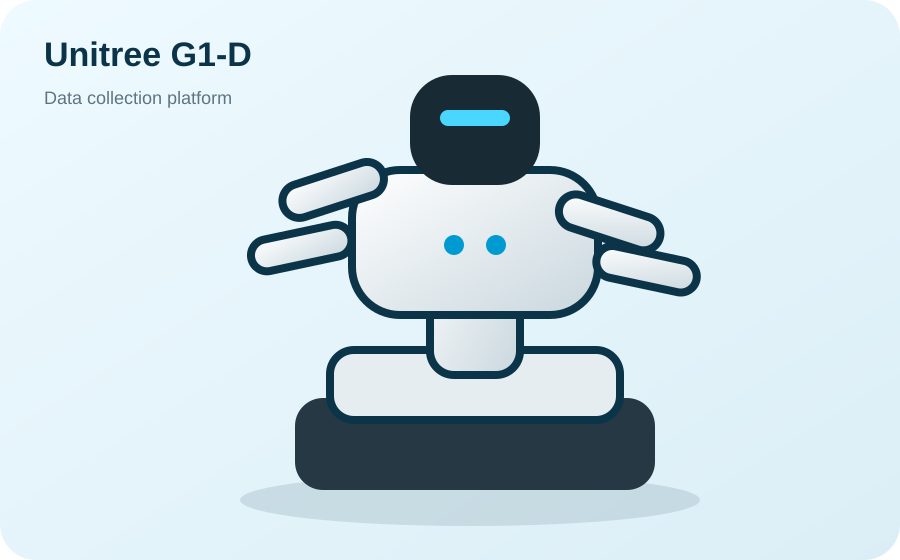

何を任せたいかで探す
搬送、点検、取放、実験自動化、データ収集から候補を整理。
ソリューションを見る →AI ROBOT COMPARISON & IMPLEMENTATION
人型、四足、ロボットアームを、用途・開発環境・予算から比較します。 製品選定、SDK確認、PoC設計、見積、大学購買、導入・運用まで一貫して支援します。



START HERE
複雑な技術情報は整理し、必要な順番で案内します。
搬送、点検、取放、実験自動化、データ収集から候補を整理。
ソリューションを見る →人型、移動式ヒューマノイド、四足、アームを同じ基準で比較。
製品比較を見る →公式資料、GitHub、ROS、価格・見積、大学購買を目的別に整理。
導入ガイドを見る →WHAT WE DO
メーカーありきではなく、課題と成功条件から始めます。
適合する理由だけでなく、弱点、追加開発、未確認事項も整理します。
ロボット、ハンド、カメラ、ROS、データ、VLAを一つの構成にします。
評価指標、見積、安全、初期設定、教育、保守・改善まで支援します。
PRODUCT CATEGORIES
製品名が決まっていなくても、仕事と環境から適した形態を絞れます。
ONE TASK, MULTIPLE OPTIONS
製品を先に決めず、成功条件から形態・メーカー・構成を比較します。
MANUFACTURERS & ECOSYSTEM
製品ライン、SDK、OSS、GitHub、Hugging Face、公式資料をまとめて確認できます。
CASE / UNIVERSITY PROCUREMENT
Unitree G1-Dの選定、正式見積、二社見積、大学購買条件を整理。
支援内容と進捗を見るハンド構成、SDK、付属品、納期、保証、検収条件、正式型番を確認し、大学事務で必要な情報を揃えています。
※進行中案件です。大学ロゴ、個人名、具体価格、未承認の推薦コメントは掲載していません。
GUIDES & RESOURCES
深い技術情報は必要な人だけが進めるよう、ガイドと資料ページに整理しています。
IMPLEMENTATION PROCESS